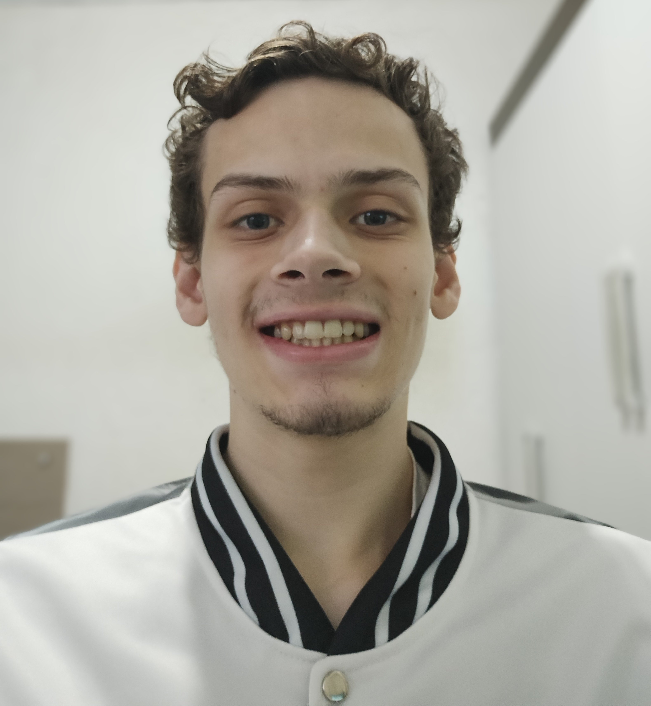

Olá, eu sou Alan Ryan
Tenho 21 anos e sou técnico em enfermagem, além de estudante de desenvolvimento de sistemas. Sou uma pessoa observadora, crítica e dedicada, com interesse em tecnologia, música e saúde.
No meu portfólio, você encontrará projetos de programação que refletem meu aprendizado e minha criatividade, além de experiências práticas na área da saúde. Gosto de estudar de forma detalhada e aplicar soluções eficientes, sempre buscando qualidade e organização no que faço.
Entre meus interesses musicais estão artistas como Suzi Quatro, Joan Jett, Rita Lee, e bandas como AC/DC, The Beatles e Led Zeppelin. Também tenho afinidade por literatura, especialmente obras de Machado de Assis e Platão.
